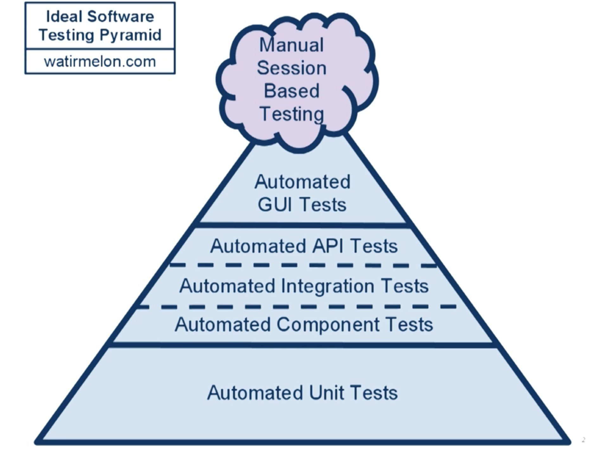
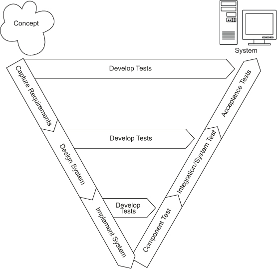
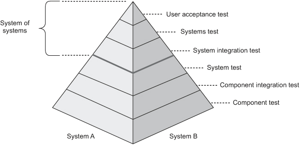
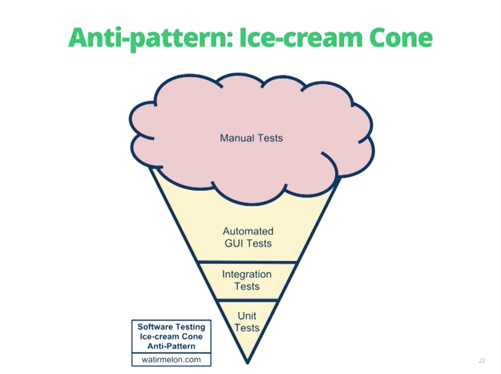
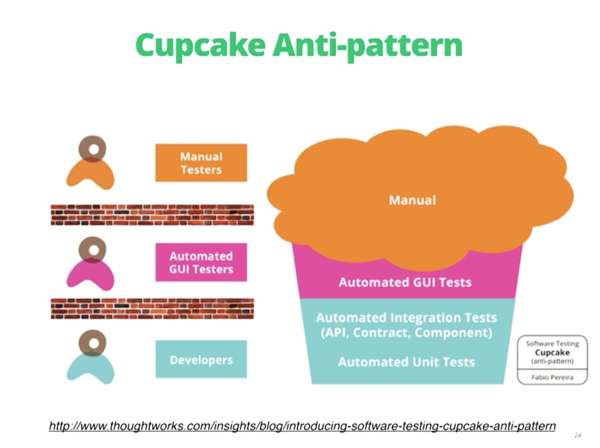

For our pipelines we will need three kinds of tests.
Unit Tests
Components
Acceptance
And is important to test...
Application
Configuration
Environment
Testing
This image describes the different types of tests and the leves of impact with Businness, or support to programming, and the way the test is done, or automatically or manually
Jez Humble - Continuous Delivery

Ideal Software Testing Pyramid
Neal Ford - Continuous Delivery - Test Practices
In Manual tests the ideal is to have:
Showcases
Usability Tests
Exploratoring Tests

V-modelRex Black - Advanced Software Testing

Fundamental test process in a system of systems project
Rex Black - Advanced Software Testing
What to test?
Identify and Prioritizing Projects Risks and than Decide what Actions to Mitigate them
I would be suspicious of anything like 100% - it would smell of someone writing tests to make the coverage numbers happy, but not thinking about what they are doing.
You rarely get bugs that escape into production, and
You are rarely hesitant to change some code for fear it will cause production bugs.
Martin Fowler - Blog - TestCoverage
Anti Patterns

Software Testing Ice-cream Cone Anti-Patterns
Neal Ford - Continuous Delivery - Testing Practices

Software Testing Cupcake Cone Anti-Patterns
Neal Ford - Continuous Delivery - Testing Practices